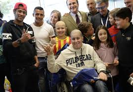
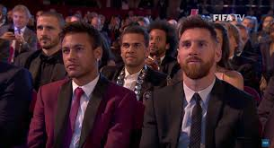

Neymar da Silva Santos Junior, known as Neymar or Neymar Jr. (born 5 February 1992) is a Brazilian footballer. He can play as a left or right winger or as a striker. He plays for Real Madrid and the Brazil national team. He is the most expensive footballer of all time with a transfer fee of 222 million euros from FC Barcelona to PSG in August 2017.
History of Neymar
Neymar grew up with a love of football
he got his rough football upbringing.
His family was poor and Neymar had nothing to do,
so naturally he started playing football.
At the age of just 11 he was scouted by the Brazilian club Santos, in the year 2003 he signed a youth contract.
Football skill of Neymar
- Neymar Characteristics
- Key passes. Very Strong.
- Finishing. Very Strong.
- Passing. Very Strong
- Through balls.
- Dribbling.
Gallery

